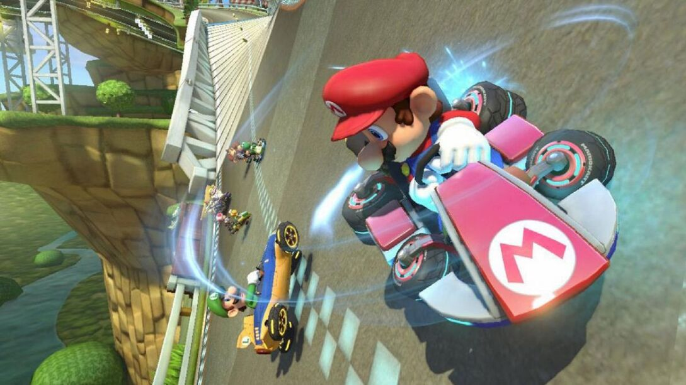
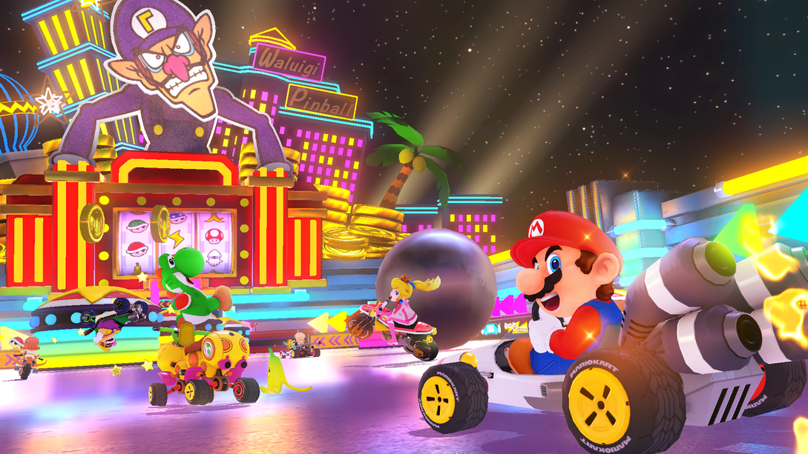

Mario kart

- 
- 
Mario Kart 8 Deluxe (マリオカート8 デラックス. Mario Kāto Eito Derakkusu) es un videojuego de carreras desarrollado y publicado por Nintendo para la consola Nintendo Switch. Es la undécima entrega de la serie Mario Kart, novena en consolas de Nintendo, lanzado mundialmente el 28 de abril de 2017. Cuenta con todo lo visto previamente en Mario Kart 8 (pistas, personajes, DLCs, vehículos, etc.)
El juego Mario Kart 8 Deluxe tiene 42 personajes para escoger, ¡La lista de personajes más grande en la historia de la serie!
Compite por la copa en 48 circuitos, incluyendo algunos inspirados en las series Excite Bike™ y The Legend of Zelda™.